Purely Functional Data Structures
Dan Rosen, Twitter
@mergeconflict
Mutability
Boring example
(obvious things omitted)
public class Rectangle implements Comparable<Rectangle> {
private int width, height;
public Rectangle(int width, int height);
// getters and setters
public int getWidth();
public int getHeight();
public void setWidth(int width);
public void setHeight(int height);
// identity
public int hashCode();
public boolean equals(Object o);
public int compareTo(Rectangle r);
}
Identity crisis
// add a rectangle to a hash set
Set<Rectangle> s = new HashSet<Rectangle>();
Rectangle r = new Rectangle(2, 3);
s.add(r); // s = [Rectangle(2, 3)]
// mutate one of the rectangle's fields ...
r.width = 5; // s = [Rectangle(5, 3)]
s.size(); // 1
s.contains(r); // false
// even more fun ...
s.add(r); // s = [Rectangle(5, 3), Rectangle(5, 3)]
(a similar problem occurs with tree sets)
🅇
Trolling Prof. Liskov
public class Square extends Rectangle {
public Square(int length) {
super(length, length);
}
}
Problem solved?
public class Square extends Rectangle {
public Square(int length) {
super(length, length);
}
public void setLength(int length) {
super.setWidth();
super.setHeight();
}
@Override public void setWidth(int width) { setLength(width); }
@Override public void setHeight(int height) { setLength(height); }
}
Hidden invariants!
@DataPoints
public static void Rectangle[] rectangles(); // may contain squares!
@Theory
public void setWidthMustNotSetHeight(Rectangle r) {
// get an arbitrary rectangle and remember its height
int expectedHeight = r.getHeight();
// change the rectangle's width, and ...
r.setWidth(0);
assertEquals(r.getHeight(), expectedHeight);
}
🅇🅇
More fun
public class RectangleManager {
private final Set<Rectangle> rectangles = new HashSet<Rectangle>();
public Set<Rectangle> getRectangles() {
return rectangles;
}
}
Somewhat less mutable
public Set<Rectangle> getRectangles() {
return Collections.unmodifiableSet(rectangles); // ugh
}
YOLO
public synchronized Set<Rectangle> getRectangles() {
Set<Rectangle> copy = new HashSet<Rectangle>();
for (Rectangle r : rectangles) {
copy.add(new Rectangle(r));
}
return copy;
}
🅇🅇🅇
Problems
- Unstable identity (as viewed by containing objects)
- Very difficult to satisfy superclass behavioral contracts in subclasses
- Defensive copying and synchronization often necessary
Immutability
Feels good*, man
public class Rectangle implements Comparable<Rectangle> {
private final int width, height;
public Rectangle(int width, int height);
// getters
public int getWidth();
public int getHeight();
// identity
public int hashCode();
public boolean equals(Object o);
public int compareTo(Rectangle r);
⥥
⥣
// setters
public Rectangle setWidth(int width) {
return new Rectangle(width, this.height);
}
public Rectangle setHeight(int height) {
return new Rectangle(this.width, height);
}
Real talk
- Basic approach: final all the way down
- Whenever an update is needed, copy
- Let the garbage collector deal with it
Stack interface
public class Stack<E> {
public Stack<E> push(E element); // return a copy
public Stack<E> pop(); // return a copy
public E top();
public boolean isEmpty();
public static <E> Stack<E> empty(); // factory
}
Stack<Integer> empty = Stack.empty();
Stack<Integer> a = empty.push(1);
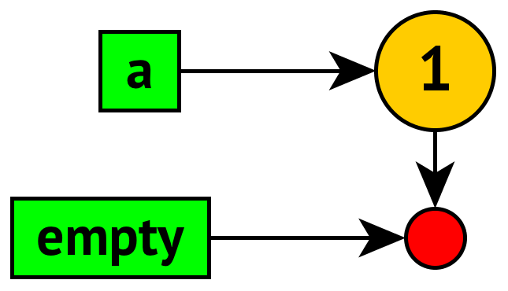
Stack<Integer> b = a.push(2).push(3);
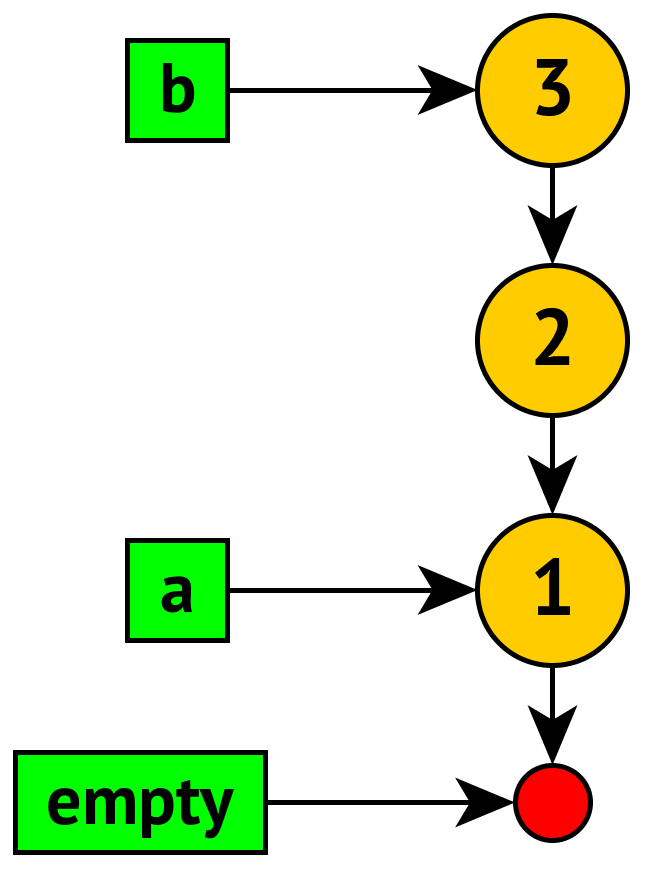
Stack<Integer> c = b.pop().push(4);
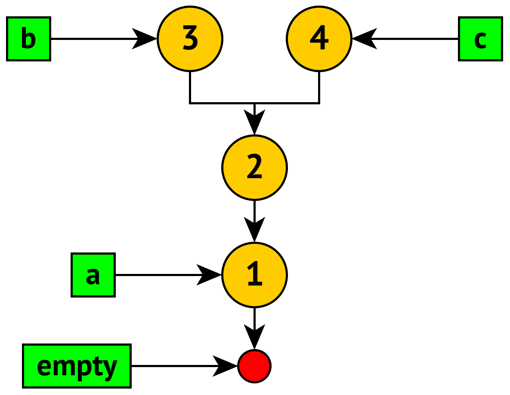
Stack<Integer> d = a.push(5);
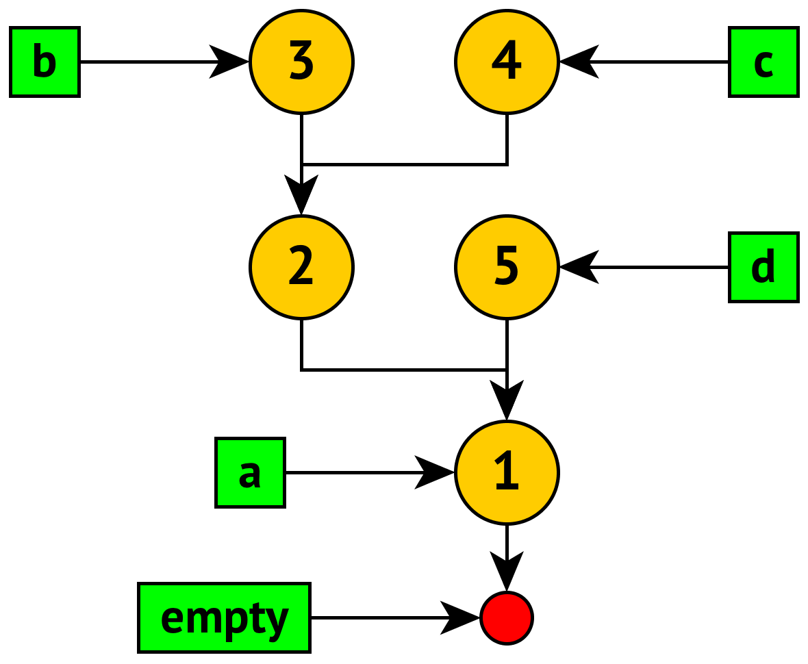
b = b.pop(); // 3 can be GC'ed
d = d.pop(); // 5 can be GC'ed
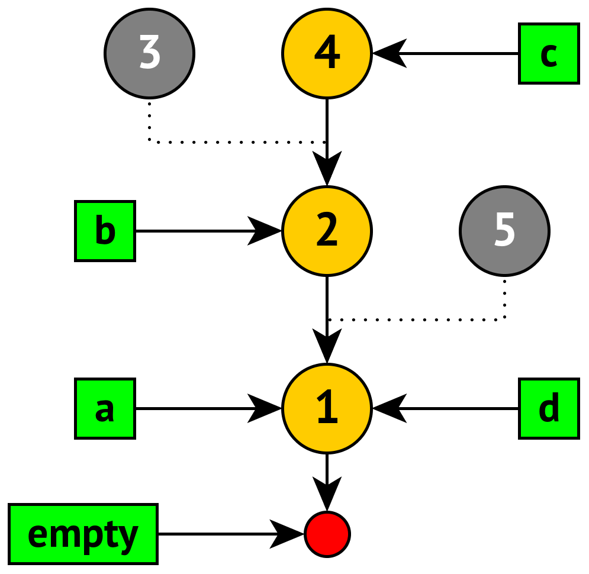
Stack implementation
public class Stack<E> {
private final E head;
private final Stack<E> tail;
private Stack() {
head = null;
tail = null;
}
private Stack(E head, Stack<E> tail) {
this.head = head;
this.tail = tail;
}
⥥
⥣
public Stack<E> push(E element) {
return new Stack<E>(element, this);
}
public Stack<E> pop() {
return tail;
}
public E top() {
return head;
}
public boolean isEmpty() {
return tail == null;
}
⥥
⥣
private static final Stack<Object> EMPTY = new Stack<Object>();
@SuppressWarnings("unchecked")
public static <E> Stack<E> empty() {
return (Stack<E>) EMPTY;
}
"Persistent" data structures
- Common substructure can be shared between copies
- Somewhat similar to copy-on-write, but easier and more efficient
- Also note: stable identity! We could even memoize hashCode...
Whatever
Queue interface
public class Queue<E> {
public Queue<E> enqueue(E element); // return a copy
public Queue<E> dequeue(); // return a copy
public E front();
public boolean isEmpty();
public static <E> Queue<E> empty(); // factory
}
Double the fun?
- Stack: a singly-linked list, with a reference to the top
- Queue: a doubly-linked list, with references to the back and front?
Queue<Integer> a = /* ... */;
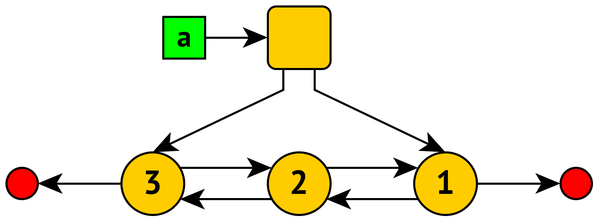
Queue<Integer> b = a.dequeue();
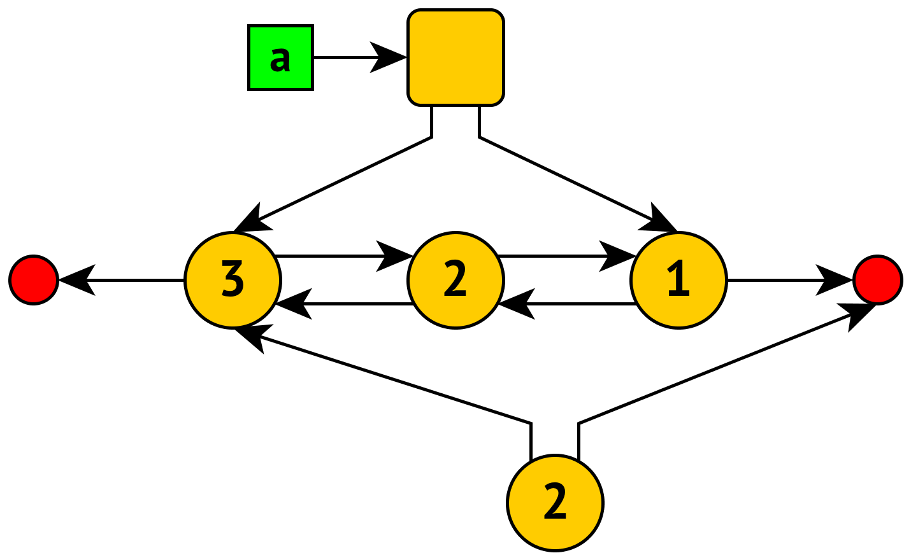
Queue<Integer> b = a.dequeue();
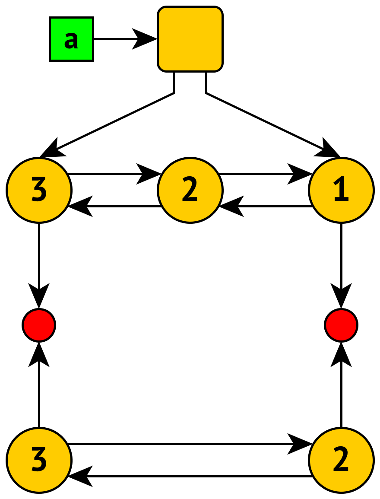
Queue<Integer> b = a.dequeue();
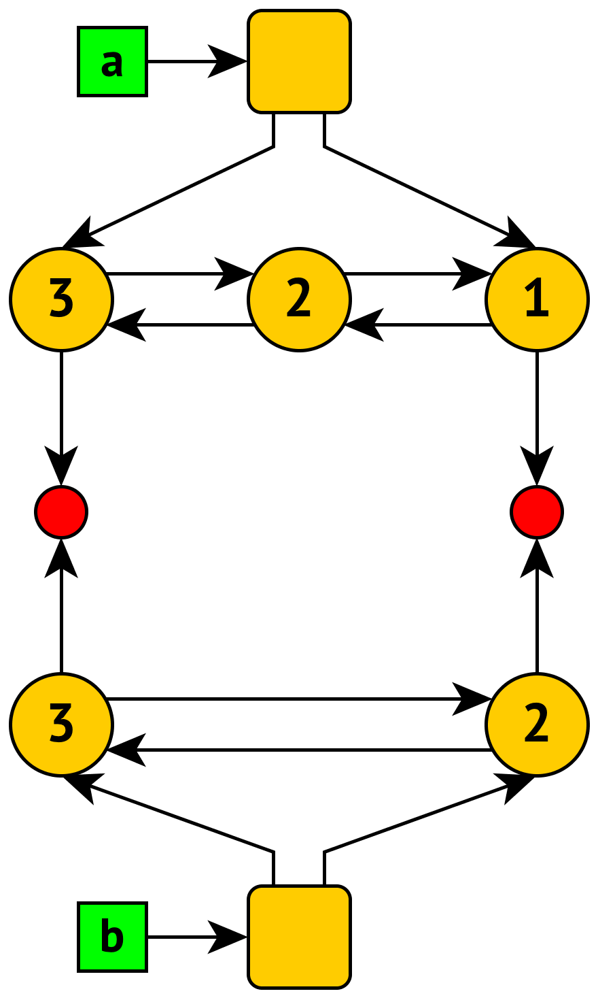
Not quite
- All enqueue/dequeue operations require complete copies
- Persistent—previous copies are preserved—but not efficient
But close
- Two stacks: incoming and outgoing
- Push to incoming stack, pop from outgoing stack
- Invariant: outgoing stack must be non-empty if queue is non-empty
Queue<Integer> empty = Queue.empty();
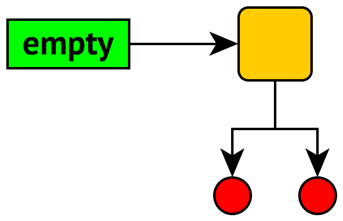
Queue<Integer> a = empty.enqueue(1);
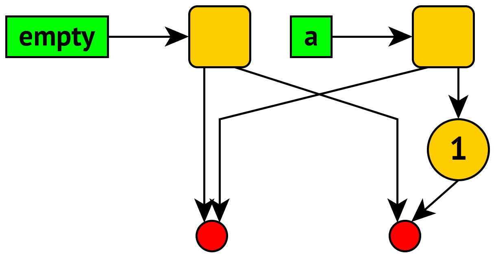
Queue<Integer> b = a.enqueue(2).enqueue(3).enqueue(4);
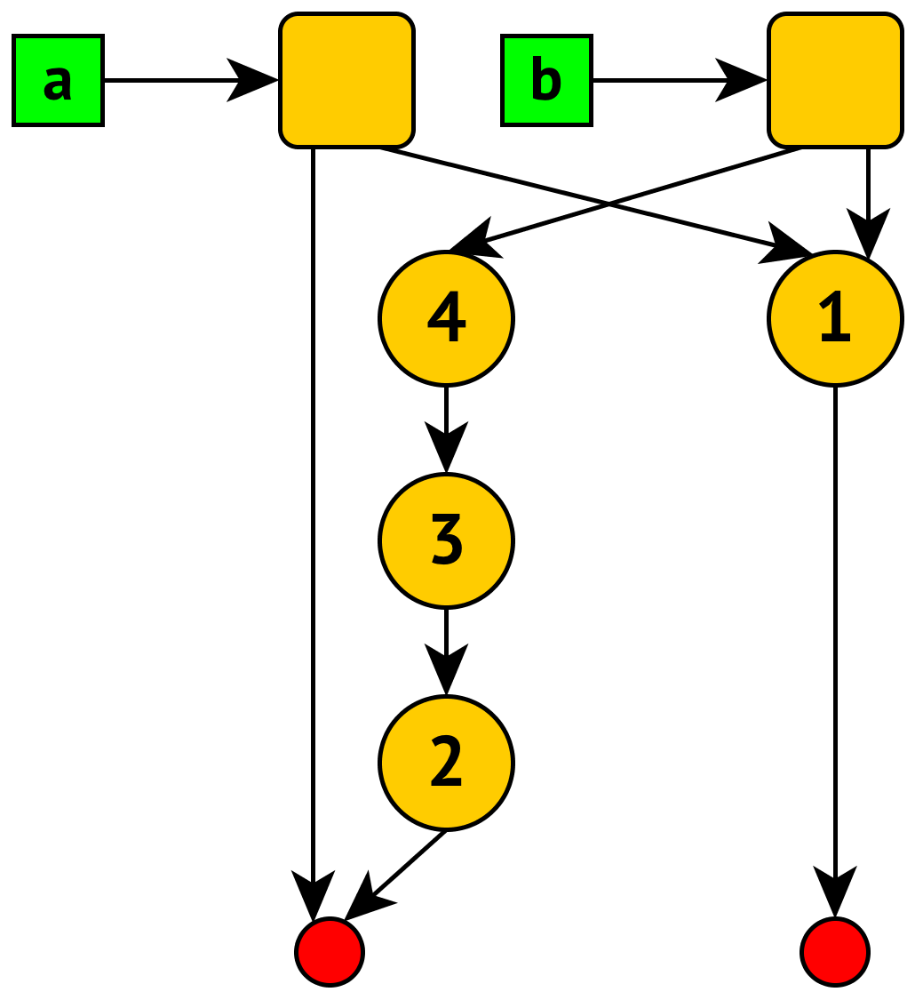
Queue<Integer> c = b.dequeue();
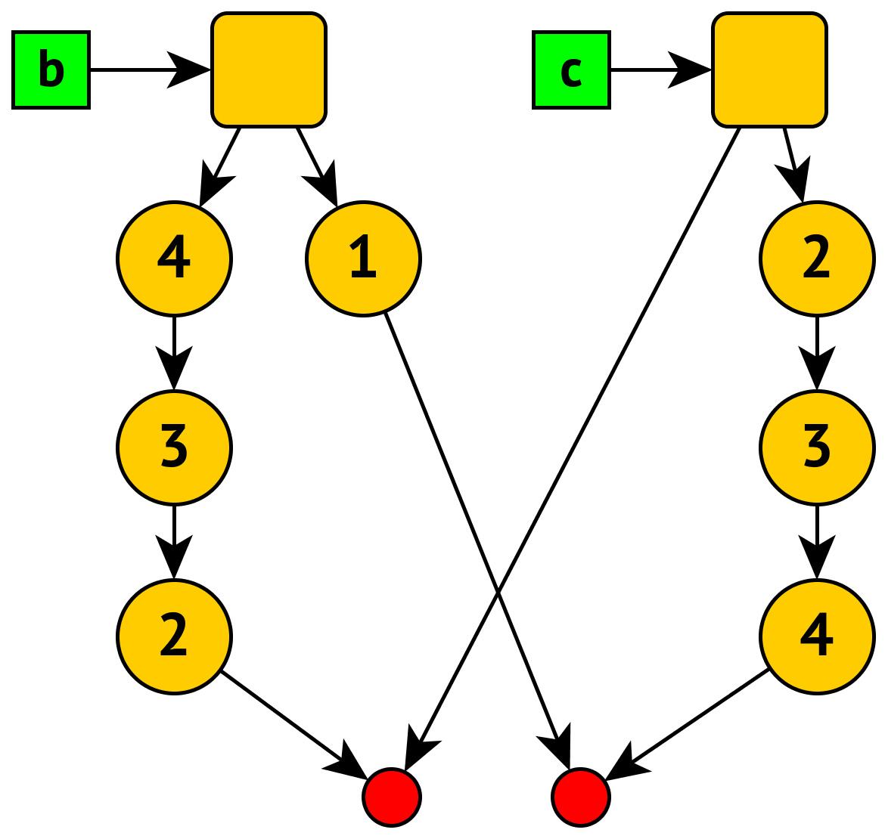
Queue<Integer> d = c.dequeue().enqueue(5);
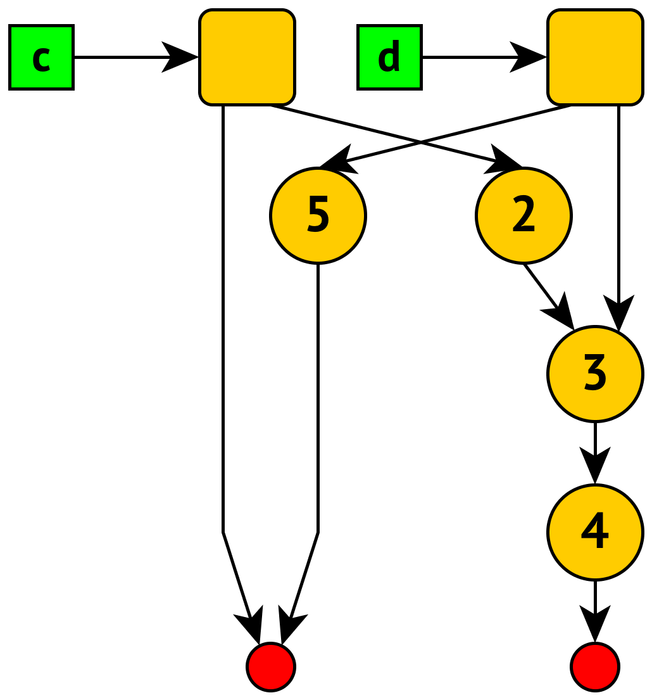
Prerequisite
public Stack<E> reverse() {
Stack<E> in = this, out = empty();
while (!in.isEmpty()) {
out = out.push(in.head);
in = in.tail;
}
return out;
}
Queue implementation
public class Queue<E> {
private final Stack<E> in, out;
private Queue() {
in = Stack.empty();
out = Stack.empty();
}
private Queue(Stack<E> in, Stack<E> out) {
if (out.isEmpty()) {
this.in = Stack.empty();
this.out = in.reverse();
} else {
this.in = in;
this.out = out;
}
}
⥥
⥣
public Queue<E> enqueue(E element) {
return new Queue<E>(in.push(element), out);
}
public Queue<E> dequeue() {
return new Queue<E>(in, out.pop());
}
public E front() {
return out.top();
}
public boolean isEmpty() {
return out.isEmpty();
}
⥥
⥣
private static final Queue<Object> EMPTY = new Queue<Object>();
@SuppressWarnings("unchecked")
public static <E> Queue<E> empty() {
return (Queue<E>) EMPTY;
}
Analysis
- Enqueue: always O(1)
- Dequeue: sometimes O(1), sometimes O(n)
Amortized analysis
- Assume each enqueued element will eventually be rotated
- Pay the cost of rotation for each element when enqueuing
- Enqueue: O(1), with 1 credit
- Dequeue: amortized O(1), debiting when needed to rotate
Microbenchmarking!
Real-time message queue
Adapt for concurrent reads and writes
Testbed
public class CASQueue<E> {
private final AtomicReference<Queue<E>> q;
private final Semaphore nonEmpty = new Semaphore(0);
public CASQueue(Queue<E> q) {
this.q = new AtomicReference<Queue<E>>(q);
}
// compare-and-set loop
public void enqueue(E element);
public E dequeue();
}
⥥
⥣
public class LockQueue<E> {
private Queue<E> q;
private final Lock lock = new ReentrantLock();
private final Condition nonEmpty = lock.newCondition();
public LockQueue(Queue<E> q) {
this.q = q;
}
// lock/unlock, await/signal
public void enqueue(E element);
public E dequeue();
}
Measurements
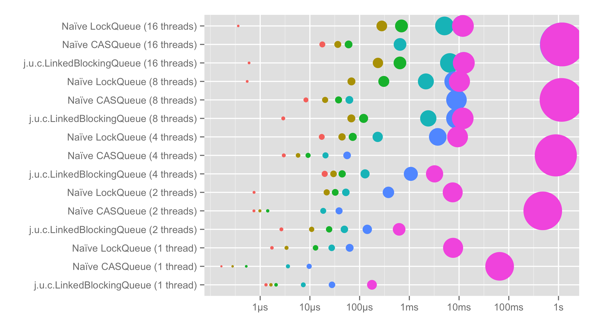🅇
Theory != Practice
- Amortized analysis is unsuitable for real-time applications
- Need better worst-case performance
- Same approach, new invariant: stacks can be at most 3 elements long
Queue<Integer> empty = Queue.empty();
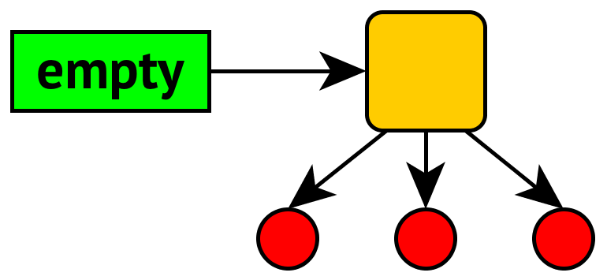
Queue<Integer> a = empty.enqueue(1);
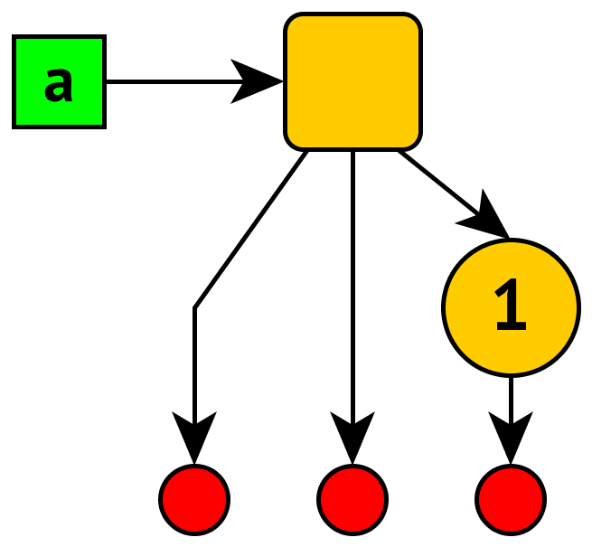
Queue<Integer> b = a.enqueue(2).enqueue(3);
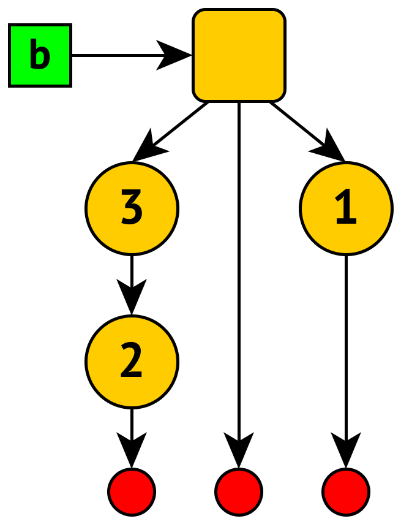
Queue<Integer> c = b.enqueue(4);
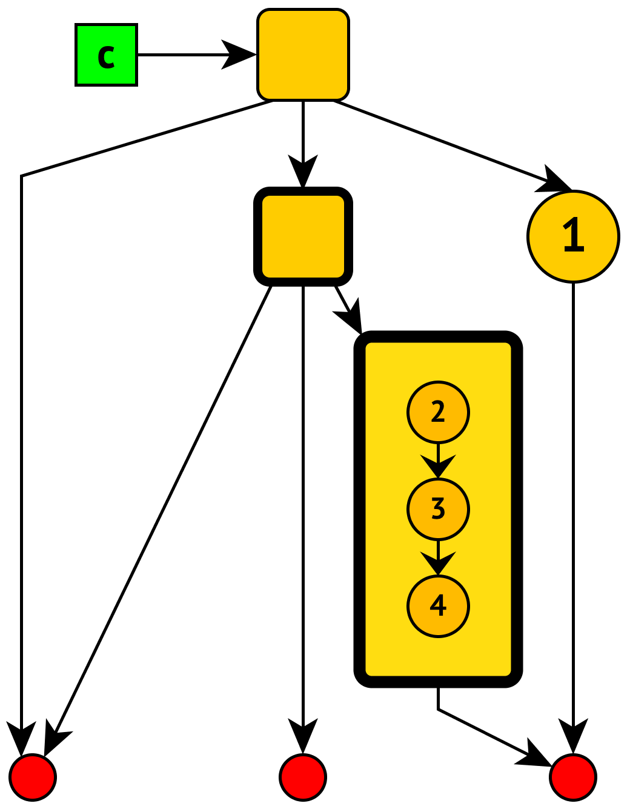
Queue<Integer> d = c.enqueue(5)./* ... */.enqueue(10);
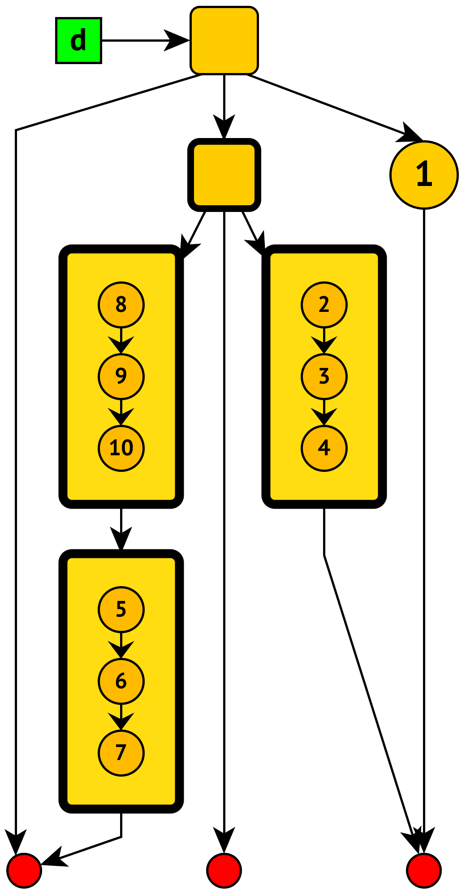
Queue<Integer> e = c.dequeue();
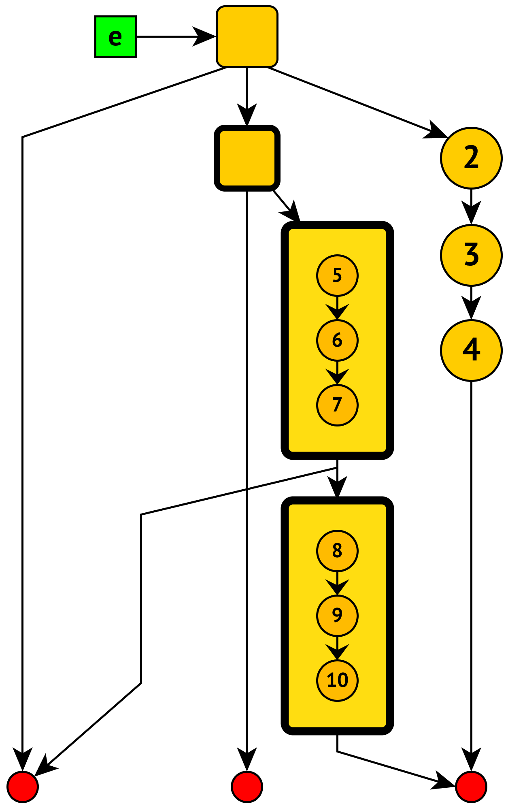
Mind = Blown
Prerequisite
public int size() {
return isEmpty() ? 0 : tail.size() + 1;
}
Queue reimplementation
public class Queue<E> {
private final Stack<E> in;
private final Queue<Stack<E>> spine;
private final Stack<E> out;
@SuppressWarnings("unchecked")
private Queue() {
in = Stack.empty();
spine = (Queue<Stack<E>>) this;
out = Stack.empty();
}
⥥
⥣
private Queue(Stack<E> in, Queue<Stack<E>> spine, Stack<E> out) {
if (out.isEmpty()) {
if (spine.isEmpty()) {
// case 1: same as naïve queue
this.in = Stack.empty();
this.spine = empty();
this.out = in.reverse();
} else {
// case 2: dequeue spine
this.in = in;
this.spine = spine.dequeue();
this.out = spine.front();
}
} else {
if (in.size() == 3) {
// case 3: enqueue spine
this.in = Stack.empty();
this.spine = spine.enqueue(in.reverse());
this.out = out;
} else {
// case 4: same as naïve queue
this.in = in;
this.spine = spine;
this.out = out;
}
}
}
⥥
⥣
public Queue<E> enqueue(E element) {
return new Queue<E>(in.push(element), spine, out);
}
public Queue<E> dequeue() {
return new Queue<E>(in, spine, out.pop());
}
public E front() {
return out.top();
}
public boolean isEmpty() {
return out.isEmpty();
}
⥥
⥣
private static final Queue<Object> EMPTY = new Queue<Object>();
@SuppressWarnings("unchecked")
public static <E> Queue<E> empty() {
return (Queue<E>) EMPTY;
}
Measurements
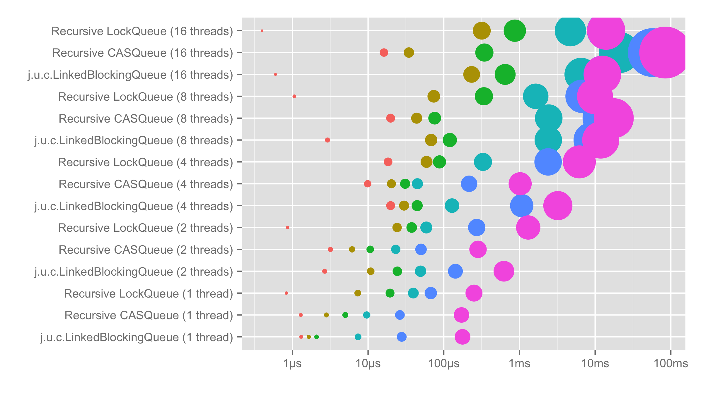
Success.
How did we get here?
Problem 1: Unstable identity
Solved, trivially.
Problem 2: Behavioral subtyping
Not solved, but making state change visible (by returning copies) helps.
Problem 3: Defensive copying
Solved efficiently with persistent data structures.
Point being
- Not recommending persistent queues for messaging (use Disruptor!)
- But performance is very good for general use
- Very efficient, persistent implementations exist for:
- Random-access vectors (bit-mapped vector tries)
- Unordered sets and maps (hash array mapped tries)
- Ordered sets and maps (persistent red-black trees)
- etc.
- I'd like to see these in the Java standard library